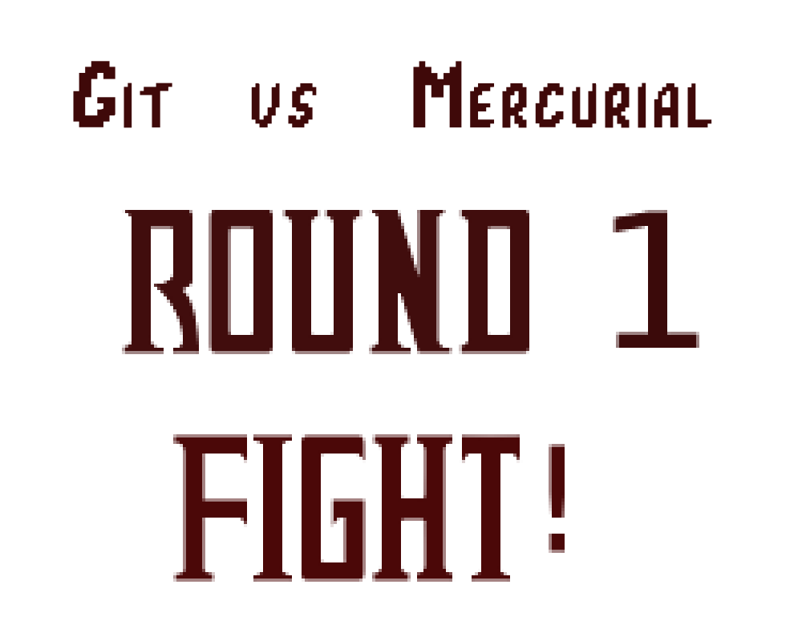
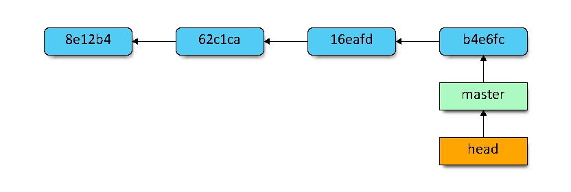
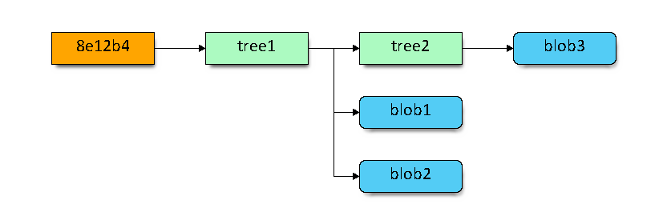
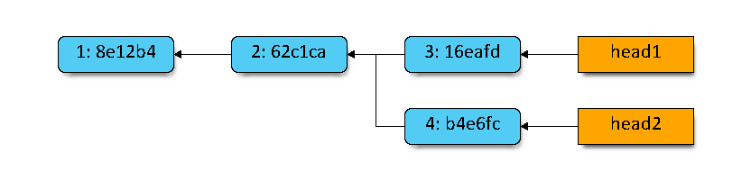
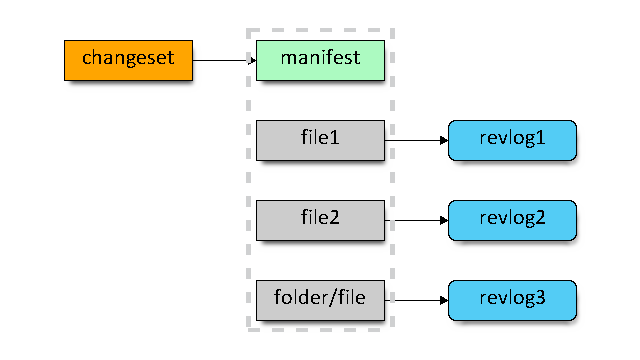

Adam Parchimowicz
- developer for > 7 years
- passionate about new-tech
- java nerd
- fan of cheesy jokes

Facts and myths.
Git / Mercurial - two rival DVCS out there since 2005.
In almost 8 years some facts are already myths.
"Git's CLI sucks!" say Mercurial's power users.
- hard to learn
- harder to master
- exposes unnecessary internal details
- no "native" support on Windows
Git has improved a lot since its early days.
- fantastic well written free book
- not that hard to grasp the concepts*!
- you can use only basic commands
- works great on Windows now
- * still kinda hard to master**
- ** ok, very hard to become a true ninja
Though free Scott Chacon's book (available for free online) is the only thing you need to really learn most of the Git power features. And it is not that long - a free weekend is all that separates you from becoming a Git poweruser.
"Mercurial doesn't give you the power!" say Git's power users.
- history is (too) sacred
- no index
- poor branching model
- user is too limited
In reality, Mercurial has tons of plugins and disabled features.
- MQ gives you index (and more)*
- plugins for rewriting history*
- enableable power features
- power is in simplicity
- * there are so many plugins it is hard to grasp it
- * not out of the box? what about support?
- * finding a plugin to match your needs is an extra effort
Mercurial does have its vices, and so does Git.
Coolest merge ever (according to Linus):
git fetch
GIT_INDEX_FILE=.git/tmp-index git-read-tree FETCH_HEAD
GIT_INDEX_FILE=.git/tmp-index git-checkout-cache -a -u
git-update-cache --add -- (GIT_INDEX_FILE=.git/tmp-index git-ls-files)
cp .git/FETCH_HEAD .git/MERGE_HEAD
git commit
This would merge an unrelated repo into current one
what the?
git pull <other repo url> is all you need right now.
The post was from 2005 - very early days
SVN / Git / Mercurial
SVN, apart from being centralized, has a couple important characteristics:
- stores changesets in deltas
- poor branching model
- dead simple
Rough representation of SVN and Mercurial storage model

Rough representation of Git storage model

Branching model.
- In SVN branch is just a folder copy
- Git has lightweight local branches and tracking branches
- Mercurial has annotated branches and bookmarks
Merging changes between branches - ever tried this in SVN?
Branch merging in SVN is a nightmare. In Git and Mercurial it just works!
SVN vs Git / Mercurial
Subversion (SVN) |
Mercurial (Hg) |
Git |
|---|---|---|
| svn add | hg add | git add |
| svn blame | hg blame | git blame |
| svn cat | hg cat | git show |
| svn checkout | hg clone | git clone |
| svn commit | hg commit ; hg push | git commit -a ; git push |
| svn delete/remove | hg remove | git rm |
| svn diff | hg diff | git diff, git diff --cached |
| svn help | hg help | git help |
| svn log | hg log | git log |
| svn revert | hg revert | git checkout -f |
| svn status | hg status | git status |
| svn update | hg pull --update | git pull |
| svn move/rename | hg move/rename | git mv |
| ? | hg backout | git revert |
Source: http://blogs.atlassian.com/2012/02/mercurial-vs-git-why-mercurial/ + edits
Git - strengths and weaknesses
Git introduces a concept of an index (or staging area). It is an extra step, but helps with crafting a commit.

Git offers ultra-fast branching. Branch is just a pointer to a commit.
Creating a branch == writing 41 bytes to a file (40 chars + newline).
Git's repo is a bunch of objects and pointers:
- head and branch are pointers
- commit is an object that points to its parents
Git's commit is an object that points to its tree. This tree itself points to other trees or blobs.
In Git a commit is identified by a SHA1 of its contents and parent(s). Therefore it is immutable.
The same applies to all Git's objects. This makes up for great consistency!
Rewriting history: Git can do it.
- You can ammend last commit.
- Rebase instead of merging.
- Interactive rebase power!
Git's command line is messy. To drop a branch / stash / remote branch you do:
- git branch -d <branch name>
- git stash drop <stash name>
- git push origin :<branch name>
Mercurial - strengths and weaknesses
Key differences in commits structure:
- anonymous heads (no branch pointers)
- named branches
- no octopus merge

- flat manifest file
- manifest entry points to a revision in revlog
- revlog stores all file's revision
- revlog's index shows revision's length and offset
In Mercurial each file is stored in a single revlog file (+index file).
Building file revision - log(1):
- finding a revision info in index
- reading length and offset in revlog
- adding up a few deltas
- A changeset and revlog entry is identified by a SHA-1 string (called nodeid). Revlogs are append only.
- Basic history edition - hg rollback undoes last operation (i.e. commit or pull). This cannot be undone...
- hg commit --amend since mid-2012
Apart from global SHA-1 nodeid, each changeset has a sequential local revision id. This does not propagate cross-repo and can be different for each user...
MQ extension: index and "history edit":
- adds index-like feature
- many queues support for storing patches
- allows for patches versioning
- until patch in queue is commited you can edit, rearrange etc.
- commands have less switches - clearer doc
- tutorials sub-par comparing to the free git-book
- documetnation and tutorials for plugins / extensions has low quality
DVCS in corporation
Corporations need not fret the "distributed".
- centralizing a DVCS repo is a common practice
- coworkers can still exchange work before it is ready for central repo
- Git and Mercurial are blazing fast
- Additional repo backup "for free"
- Easy branching and merging - a blessing in a rapid environment (hotfixing, shifting releases, retrofitting)
- Git's cherrypick (Mercurial's transplant extension) wonderful in a hotifx environment!
Employees get extra productive when tools do not delay them. Local repo copy:
- Almost instant diffs
- Fast annotate (blame) / bisect
- Frustration free branching experience
Q & A
Thanks!